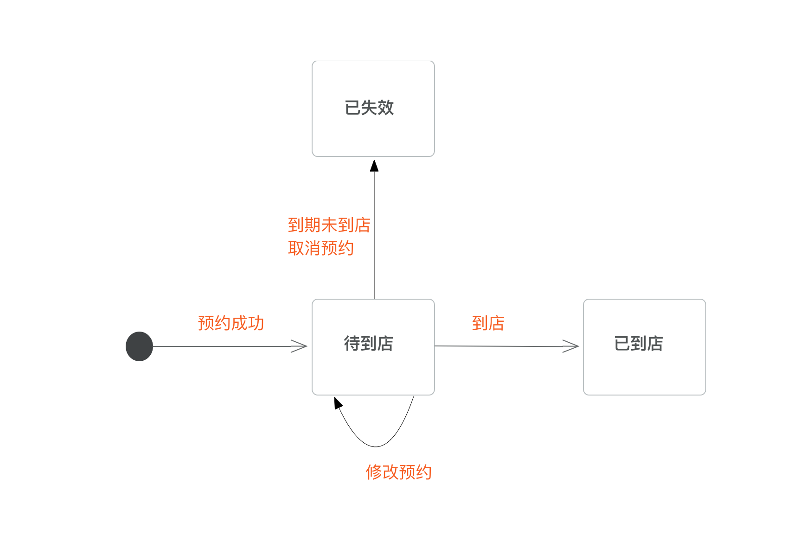

毛豆 App 到店预约
项目综述
毛豆新车网开始布局线下门店。我们在移动端设计了门店预约功能。客户可以选择所在位置附近的门店以及预约到店时间。
项目时间：2018年4月

需求与目标
设计目标
通过分析商业目标和客户目标，我们确定了设计策略，以在不伤害用户体验的同时，帮助公司达到商业目的。

约规
在设计方案时，我们还需要了解技术/业务规则的限制，以便方案能快速落地。
一些帮助我们收敛设计方案的约规包括：
- 用户的手机号码为身份标识
- 一名用户不能同时有 2 个正在进行的购车流程
- 一名客户不能同时有 1 个以上的未到店预约
The solution
Awareness stage
我们在车辆详情页中加入门店信息，使访问者感知门店的存在，同时激励用户预约门店拜访。

Explore&Booking stage
我们分析业务流程，并确定客户在 app 上完成任务所需要经历的流程。


Management stage
我们建立了“预约工单” 的概念模型。客户通过预约建立工单，工单的状态会根据不同条件变化。
The measurement 测量
功能上线后，我们需要进行数据的检测，已了解用户行为和功能对业务产生的影响。以下是一些测量指标：
- 预约转化率
- 详情页门店预约列表点击率
- 查看门店按钮点击率
- 预约成功率